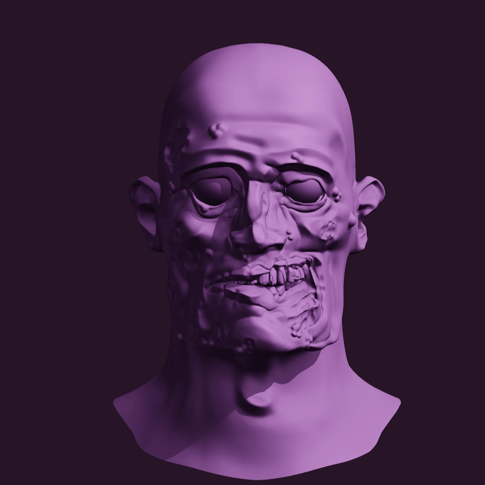
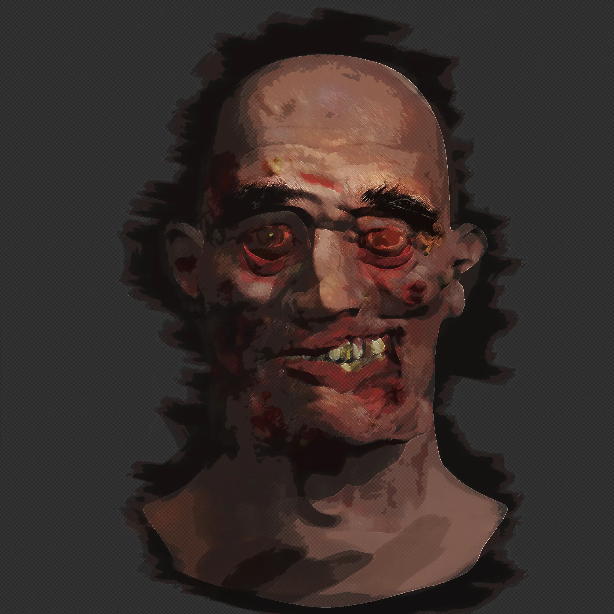
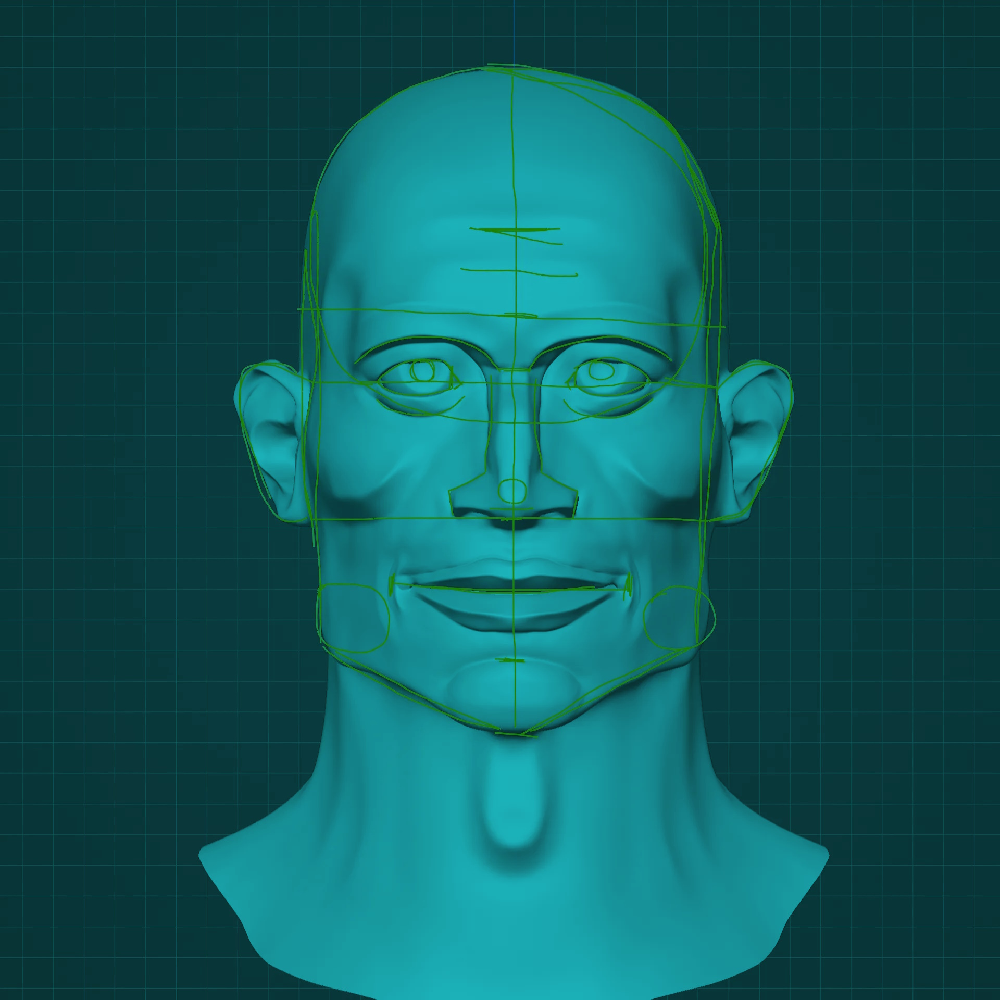
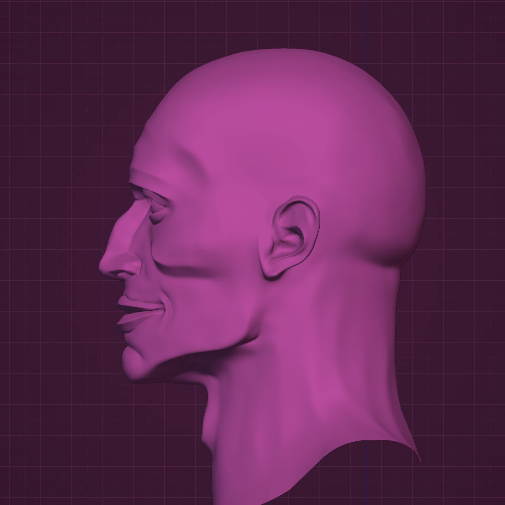
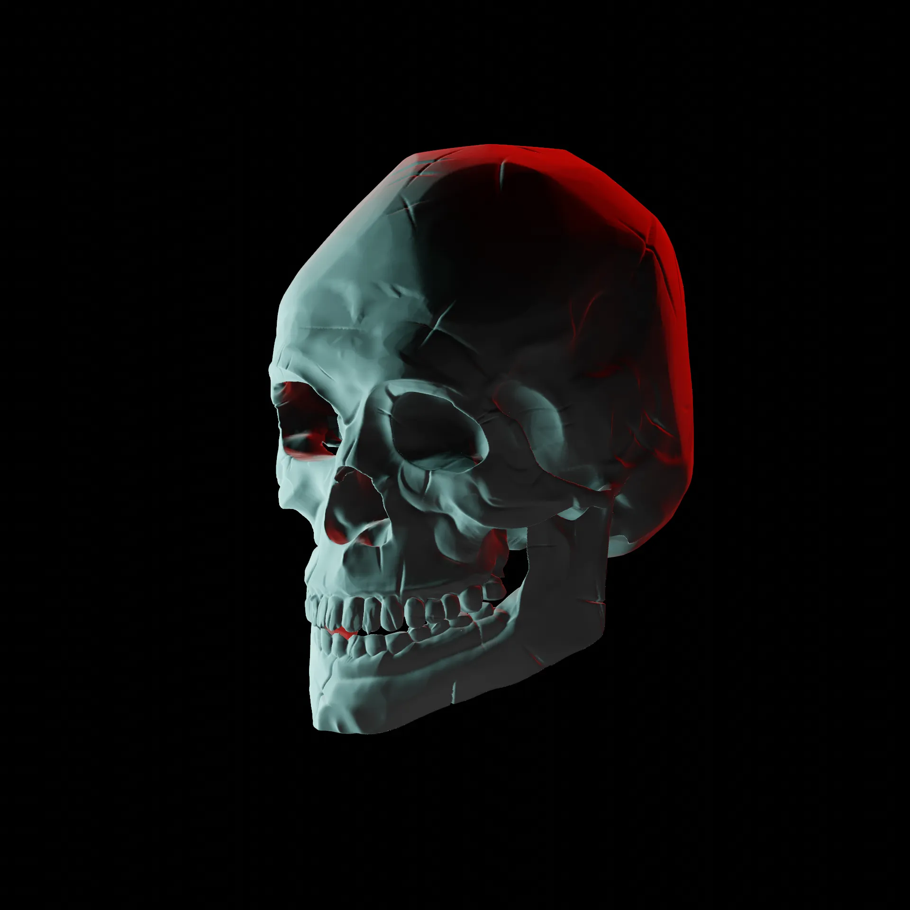

My passion
I consider myself an artistic soul, always appreciating various forms of art. Since primary school, I have been amazed by digital artists creating both 2D and 3D compositions. I have always seen digital art as an extension of its real-life counterparts. You might wonder how a flat image displayed on a screen could be an extended form of something like a real-life sculpture. However, you can sculpt a human face using a computer and use it in animation software to bring it to life in a short film. The possibilities are endless; you can make your creations dynamic and vibrant. That's why, early on in my education, I decided that digital art is the path I want to pursue in life.
Since then, I have learned 3D sculpting and modeling, as well as the basics of 3D and 2D animation, and rendering 3D environments. I have gained experience by working on various game projects with my older brother, who is a passionate programmer. While none of these projects has been released yet, we are currently working on an exciting and ambitious project that I'm eagerly looking forward to.
Each attempt to create a game or a short animated movie has taught me valuable lessons. It's incredibly thrilling because every project presents its own set of challenges, and you have to find solutions using only a few tools, depending on the type of project you're working on. The satisfaction of overcoming these challenges is truly rewarding.





My experience
Since the early years of my primary school education, I have been learning how to use specialized software and create stunning 3D and 2D art. I am familiar with Photoshop and other well-known software commonly used in the industry. However, my main focus has been on developing my skills in creating 3D art. Blender was the first application I ever used, and to this day, I continue to utilize it. It has become the industry standard, and I feel extremely confident in my ability to create and sculpt inanimate objects. Though I find organic objects slightly more challenging, I am gradually getting accustomed to them. I dedicate a significant amount of time to studying proportions and muscle placement to achieve natural-looking facial sculpting. In my artwork, I try to cultivate my own unique style, which is influenced by some of my favorite video games and movies. As I progress, I have started to experiment with altering proportions to achieve interesting elements in my work.